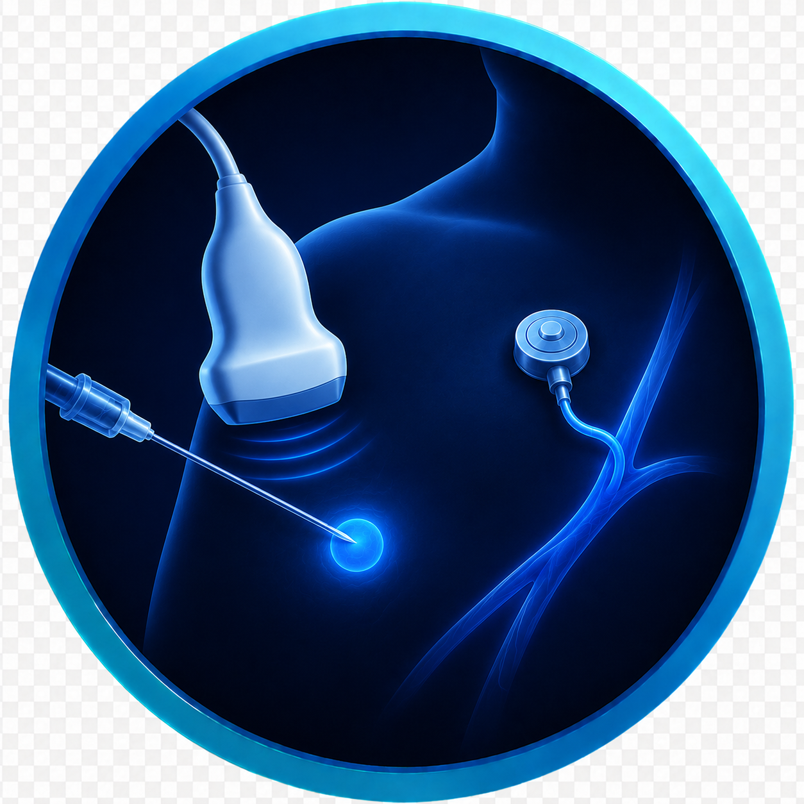
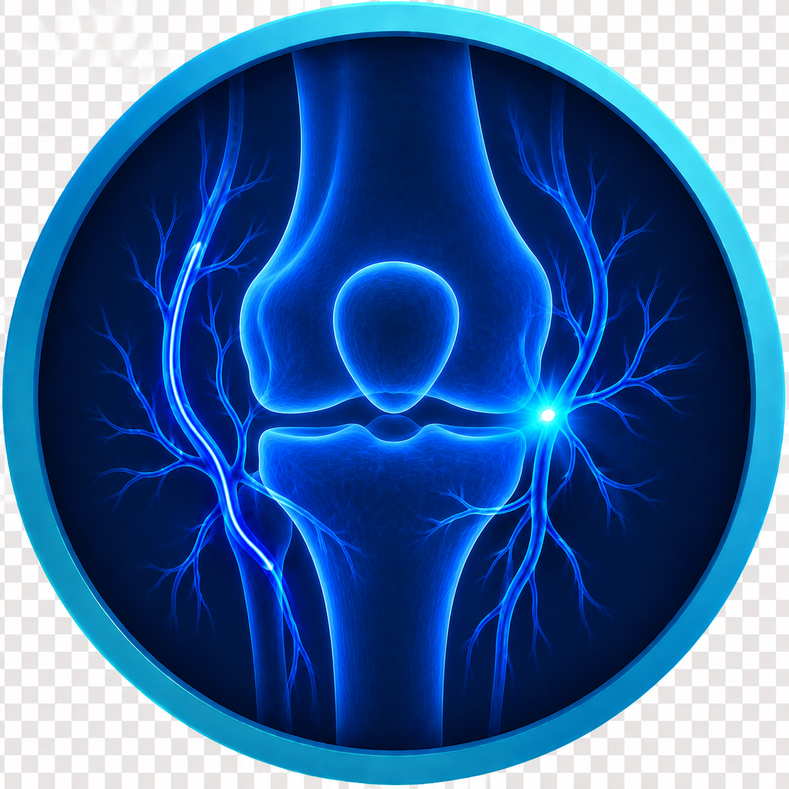
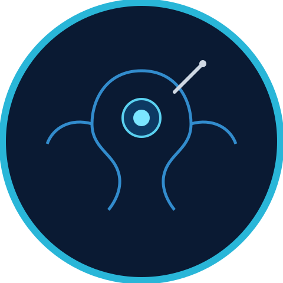

Circulation & vein conditions
Poor circulation, leg pain when walking, non-healing wounds, varicose veins, or problems with dialysis access.
Tumour-directed therapy
Liver, kidney, and other tumours — often for patients who aren't candidates for surgery, or as one part of a broader treatment plan.
The need for a tissue sample, a fluid collection that needs draining, or long-term access for medication or nutrition.
Chronic back pain from spinal fractures, worn or arthritic joints, and pain that hasn't responded to medication or physio.
Men's health
Varicoceles, enlarged prostate (BPH), and fertility-related concerns.
Uterine fibroids, pelvic congestion syndrome, and fertility-related blockages.
Liver-directed care
Liver conditions requiring specialized vascular procedures, often alongside a broader treatment plan with a hepatologist or surgeon.